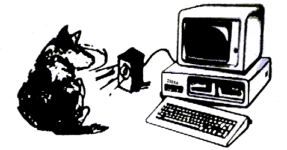
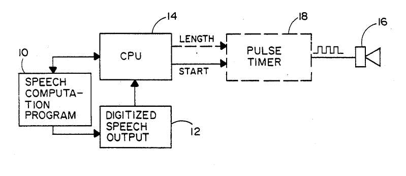

Zebra Research

A Little History..
.
-------------------
June 8, 1991 Zebra Research became a real company by offering it's first product "Audio Byte", a digital sound playback dongle for the IBM PC Parallel Port.
Audio Byte
![[DIR]](/icons/menu.gif) Back to DNULL.COM
Back to DNULL.COM
![[TXT]](/icons/text.gif) company-mail
company-mail
SourceCode/
application/
images/
sound/
turbosys/
zebra-images/
We developed two major products,the Parrallel port player and the Internal Speaker player.
As far I have been able to tell we were the first to do PWM on the internal PC speaker. This was with Self Modifing code and by playing tricks with the timer chip.
Later a company "First Byte" filed patents from what we think was seeing our code posted on CompuServe and we helped throw out that patent.
